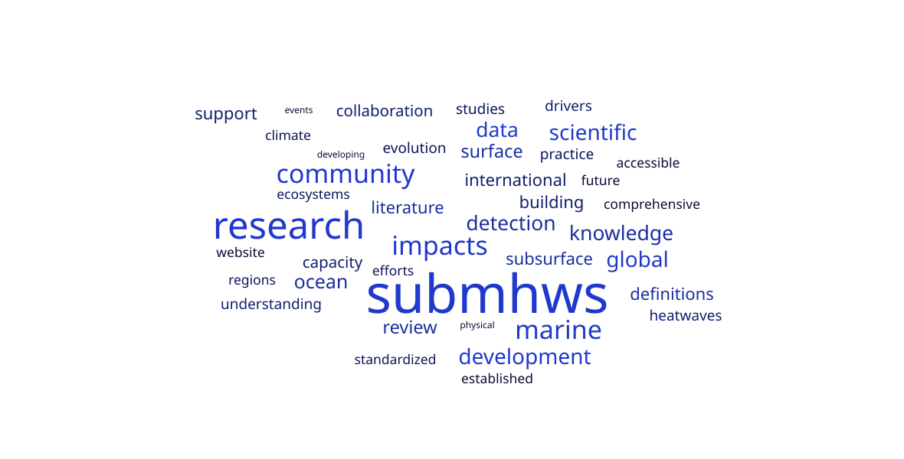

Summary
Subsurface marine heatwaves (SubMHWs) pose significant risks to marine ecosystems and biogeochemical processes. While the available satellite data on sea surface temperature have facilitated the understanding of surface marine heatwaves, SubMHWs remain understudied, primarily due to sparse subsurface observations and inconsistent definitions across disciplines. However, there is growing evidence that SubMHWs can develop and persist independently of surface thermal conditions and thus require further investigation to disentangle their drivers, dynamics and widespread impacts. Here, we propose a SCOR Working Group that will address these challenges by unifying fragmented research efforts and establishing standardized protocols to define and analyze SubMHWs. The primary objective of the working group is to foster interdisciplinary collaboration among the oceanographic and Earth system science communities, focusing on six core tasks: (1) proposing standardized detection criteria, (2) compiling a centralized repository of SubMHW data and literature, (3) reviewing the physical drivers of SubMHWs, (4) their projected evolution in the context of climate change, (5) their environmental and socioeconomic impacts and finally (6) promoting cross-basin coordination and capacity building. By integrating diverse perspectives and expertise, this initiative aims to advance understanding and predictability of SubMHWs in a warming ocean, providing a foundation for improved risk assessments and adaptation strategies of impacted regions, using globally accessible platforms.

Terms of Reference
- Compile a comprehensive open-access directory of SubMHW data sources and literature. Catalog and organize manuscripts and datasets related to SubMHWs, including their locations and access methods, to create a centralized knowledge resource for the research community.
- Propose standardized criteria for defining and detecting SubMHWs. Summarize how different definitions affect SubMHW characteristics. Considering the resolution of observations and reanalyses, recommend standardized and adaptable definitions for best practice, while providing guidance in their detection and analysis, tailored to diverse scientific and application objectives and existing datasets.
- Review key physical drivers of SubMHWs. Synthesize current understanding of the interplay between atmospheric forcing and oceanic processes in driving SubMHW development and persistence.
- Review projected evolution of global-ocean SubMHWs. Summarize expected changes in their spatial distribution, intensity, frequency and vertical extent under different climate change scenarios.
- Review environmental and socioeconomic implications of SubMHWs. Summarize the environmental, economic and cultural ramifications on local communities, as a result of SubMHWs-related disruptions on carbon uptake, higher trophic levels and fisheries across various depths.
- Promote cross-basin coordination and capacity building for SubMHW research. Foster the development and implementation of a dedicated international network of researchers and institutions to support coordinated, cross-basin efforts in SubMHW research. This will guide and support robust and integrated research.
Membership
View the full membership page
Chairs
Sofia Darmaraki, Giulia Bonino
Full Members
Amelie Simon (France), Ruijian Gou (China-Beijing), Shikha Singh (India), Thomas Frolicher (Switzerland), Antonietta Capotondi (USA), Catherine H. Gregory (Switzerland), Xinru Li (Japan), Jacob T. Cohen (USA)
Associate Members
Tongtong Xu (USA), Natacha Le Grix (Switzerland), Dan Smale (UK), Amandine Schaeffer (Australia), Franck E. K. Ghomsi (Cameroon), Thibault Guinaldo (France), Mariana Torres (USA), Regina R. Rodrigues (Brazil), Marylou Athanase (Germany), Neil Holbrook (Australia), Ronan McAdam (Italy), Dimitra Denaxa (Greece), Juliet Hermes (South Africa), Alexander Sen Gupta (Australia), Samo Diatta (Senegal), Ana Russo (Portugal), Daniel Hayes (Cyprus), Sandra Plecha (Portugal)